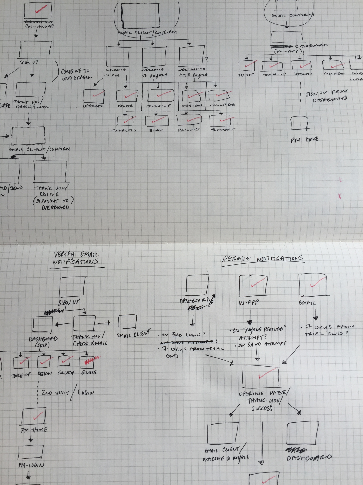
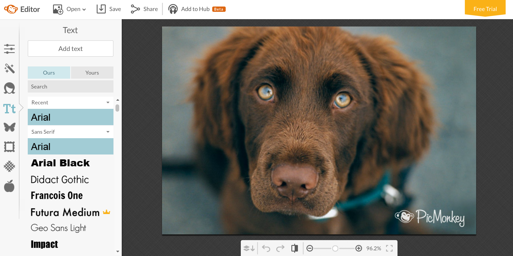
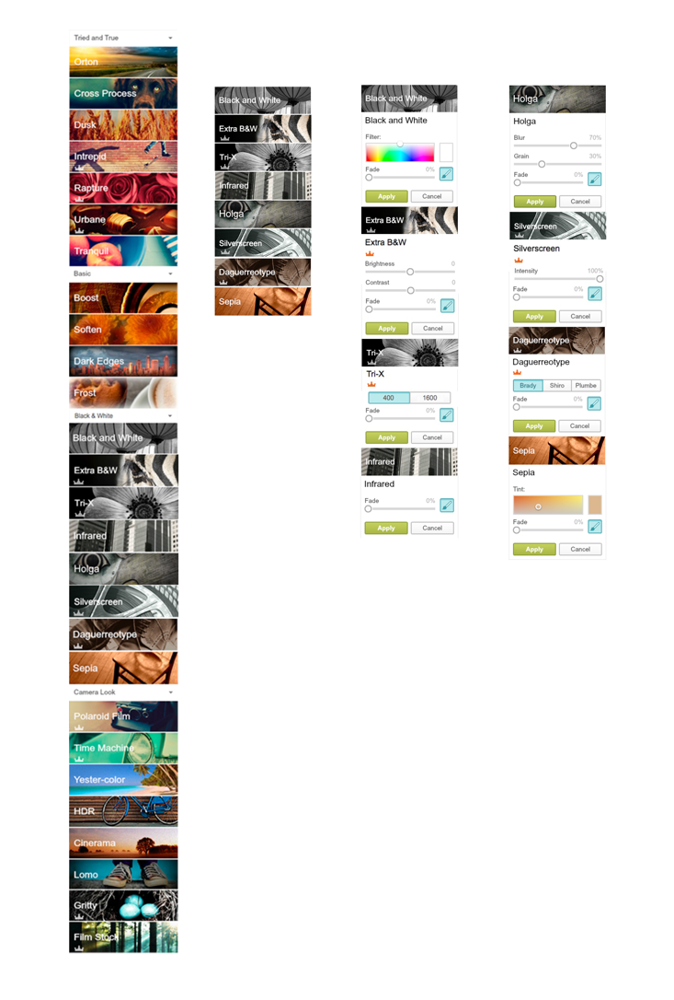
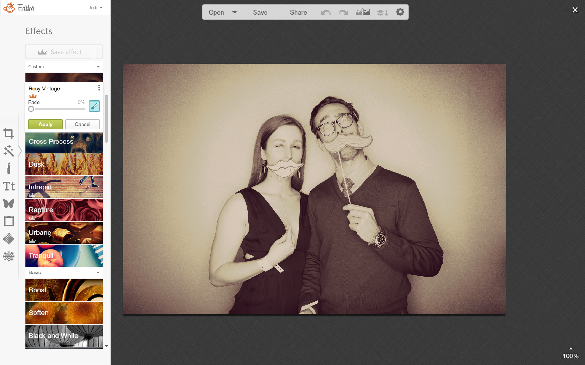
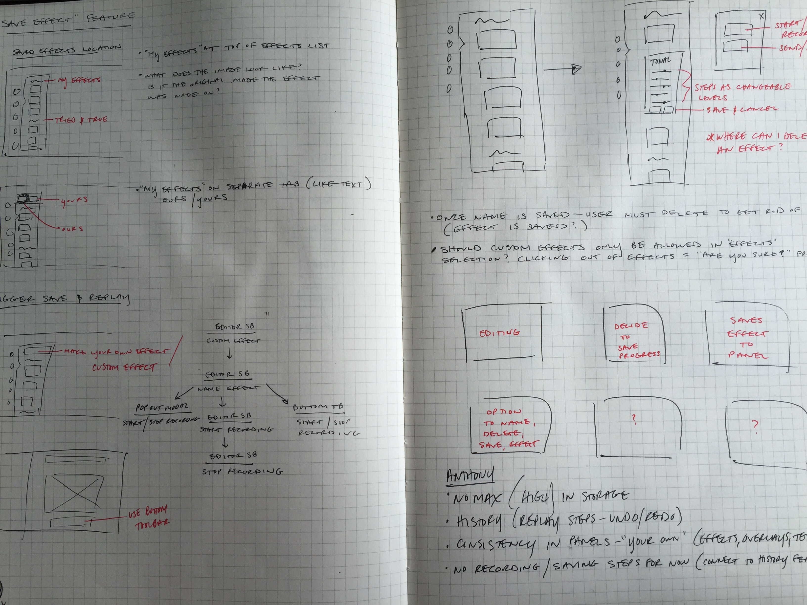
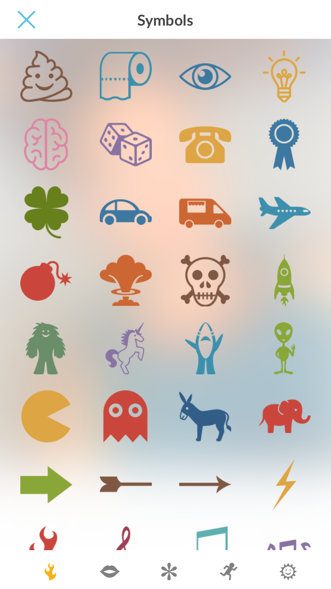

PicMonkey
PicMonkey is a web-based photo-editing service that makes editing photos painless for any skill level. PicMonkey was born from the ashes of Picnik (acquired by Google in 2010, then closed in 2012) and is lead by GeekWire's investor and chairman, Jonathan Sposato. Read the full story of how Picnik became PicMonkey here.
Projects
During my contract at PicMonkey, I was responsible for the following projects (unreleased features not included):
- Contributed to an end-to-end audit in order to improve controls and refine interactions.
- Global product features including text search, B&W Effects, and Custom Effects.
- Created a font from icons to be used on the mobile app.





